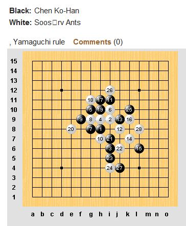
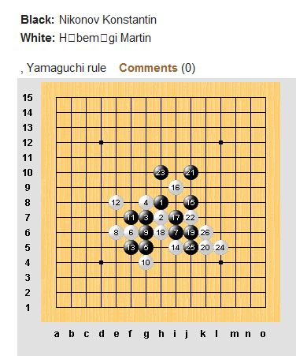
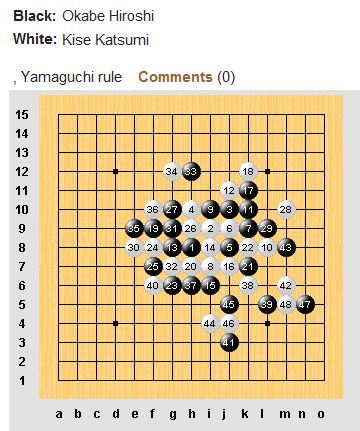

第12届世界连珠锦标赛QT第三轮
#1 第12届世界连珠锦标赛QT第三轮作者：无尽 发表时间：2011-8-2 14:31:04
主题帖
［此帖子已被 无尽 在 2011-8-2 14:31:13 编辑过］
#2 Re:第12届世界连珠锦标赛QT第三轮作者：无尽 发表时间：2011-8-2 14:31:51
| Black: | Dai Xiaohan | ||
White: | Rybka Ale� | ||
| , Yamaguchi ruleComments (0) | |||
=======上图对应的爱五子棋谱代码如下，以便你拆解：========
h8h9h7i8g10g8f7g7
======================================================
［此帖子已被 无尽 在 2011-8-2 14:32:49 编辑过］
［ 被感动的人 于 2011-8-2 14:37:16 时花20金币送鲜花一朵］
［ 梧桐风 于 2011-8-2 19:55:03 时花20金币送鲜花一朵］
#3 Re:第12届世界连珠锦标赛QT第三轮作者：珍惜你和我 发表时间：2011-8-2 14:34:51
黑直接必胜 有意思
有意思#4 Re:第12届世界连珠锦标赛QT第三轮作者：无尽 发表时间：2011-8-2 14:35:29
| Black: | Okabe Hiroshi | 冈部 | |
White: | Kise Katsumi | 黄濑 | |
| , Yamaguchi ruleComments (0) | |||
=======上图对应的爱五子棋谱代码如下，以便你拆解：========
h8i9j10h10j8j9k9i7i10l8k10j11g8i8i6
======================================================
#5 Re:第12届世界连珠锦标赛QT第三轮作者：自来水 发表时间：2011-8-2 14:36:21
 又是考必胜啊
又是考必胜啊#6 Re:第12届世界连珠锦标赛QT第三轮作者：死劲哭 发表时间：2011-8-2 14:36:43
黑9= G6 杀掉他#7 Re:第12届世界连珠锦标赛QT第三轮作者：死劲哭 发表时间：2011-8-2 14:40:42
冈部的运气也不错呀，直接胜了
#8 Re:第12届世界连珠锦标赛QT第三轮作者：絕版賭徒 发表时间：2011-8-2 14:42:02
9=F10黑必，#9 Re:第12届世界连珠锦标赛QT第三轮作者：无尽 发表时间：2011-8-2 14:42:22
| Black: | Warner Emma | 0 | 7 mins |
White: | Andersson Tord | 1 | 9 mins |
| Round 3, i2, R, 5a=j8,k7,j7,i10,i7, Yamaguchi ruleComments (0) | |||
=======上图对应的爱五子棋谱代码如下，以便你拆解：========
h8i9j9h10j7i10j10j8g11i11i8j12k13i12i13f8g9e10
======================================================
#10 Re:第12届世界连珠锦标赛QT第三轮作者：珍惜你和我 发表时间：2011-8-2 14:42:49
日本人没义气，两个日本人对局，也不肯和，非得杀个你死我活，浪费体力#11 Re:Re:第12届世界连珠锦标赛QT第三轮作者：死劲哭 发表时间：2011-8-2 14:44:34
引用：哦，都能必、都能必！
原文由 絕版賭徒 发表于 2011-8-2 14:42:02 :
9=F10黑必，

#12 Re:第12届世界连珠锦标赛QT第三轮作者：卯寻月 发表时间：2011-8-2 14:46:39
冈部多赢点，给小天多长点对手分··
#13 Re:Re:第12届世界连珠锦标赛QT第三轮作者：死劲哭 发表时间：2011-8-2 14:48:47
引用：杀的太快了吧
原文由 无尽 发表于 2011-8-2 14:42:22 :
Black: Warner Emma 0 7 mins White:
Andersson Tord 1 9 mins Round 3, i2, R, 5a=j8,k7,j7,i10,i7, Yamaguchi ruleComments (0)
=======上图对应的爱五子棋谱代码如下，以便你拆解：========
h8i9j9h10j7i10j10j8g11i11i8j12k13i12i13f8g9e10
======================================================
#14 Re:第12届世界连珠锦标赛QT第三轮作者：小小亦默 发表时间：2011-8-2 14:50:39
 岗不还是蛮强的 就是爱出错
岗不还是蛮强的 就是爱出错
#15 Re:第12届世界连珠锦标赛QT第三轮作者：死劲哭 发表时间：2011-8-2 14:50:59
故意的吧？怎么都抓禁
#16 Re:第12届世界连珠锦标赛QT第三轮作者：死劲哭 发表时间：2011-8-2 14:54:05
请问哪里看直播呀#17 Re:第12届世界连珠锦标赛QT第三轮作者：嵯峨 发表时间：2011-8-2 15:00:13
http://www.renju.net/media/games.php?gameid=44884 这里#18 Re:Re:第12届世界连珠锦标赛QT第三轮作者：天真無邪 发表时间：2011-8-2 15:02:16
引用：人家下棋的心态不同...去比赛是去嬴棋...不是去和棋...是享受比赛
原文由 珍惜你和我 发表于 2011-8-2 14:42:49 :
日本人没义气，两个日本人对局，也不肯和，非得杀个你死我活，浪费体力
［ 卯寻月 于 2011-8-2 15:04:25 时花20金币送鲜花一朵］
［ 第五象限 于 2011-8-2 17:14:31 时花20金币送鲜花一朵］
［ 小红眼镜 于 2011-8-2 18:58:48 时花20金币送鲜花一朵］
#19 Re:Re:第12届世界连珠锦标赛QT第三轮作者：死劲哭 发表时间：2011-8-2 15:03:09
引用：非常感谢
原文由 嵯峨 发表于 2011-8-2 15:00:13 :
http://www.renju.net/media/games.php?gameid=44884 这里
#20 Re:Re:第12届世界连珠锦标赛QT第三轮作者：死劲哭 发表时间：2011-8-2 15:07:15
我也替楼主尽点力
［此帖子已被 无尽 在 2011-8-2 16:12:18 编辑过］
［ 无尽 于 2011-8-2 16:12:29 时奖励此帖[金币加 100 威望加1］
［ 梧桐风 于 2011-8-2 19:55:28 时花20金币送鲜花一朵］
#21 Re:Re:Re:第12届世界连珠锦标赛QT第三轮作者：死劲哭 发表时间：2011-8-2 15:10:30
［此帖子已被 无尽 在 2011-8-2 16:12:51 编辑过］
#22 Re:Re:Re:Re:第12届世界连珠锦标赛QT第三轮作者：死劲哭 发表时间：2011-8-2 15:11:41
［此帖子已被 无尽 在 2011-8-2 16:13:09 编辑过］
#23 Re:Re:Re:Re:Re:第12届世界连珠锦标赛QT第三轮作者：死劲哭 发表时间：2011-8-2 15:12:54
［此帖子已被 无尽 在 2011-8-2 16:13:17 编辑过］
#24 Re:第12届世界连珠锦标赛QT第三轮作者：死劲哭 发表时间：2011-8-2 15:14:37
现实时比赛的有 5 桌#25 Re:第12届世界连珠锦标赛QT第三轮作者：絕版賭徒 发表时间：2011-8-2 15:28:41
=======上图对应的爱五子棋谱代码如下，以便你拆解：========
h8h9h7i8g10g8f7g7g6e8h6i6i7h4
======================================================
［ 梧桐风 于 2011-8-2 19:55:43 时花20金币送鲜花一朵］
#26 Re:第12届世界连珠锦标赛QT第三轮作者：死劲哭 发表时间：2011-8-2 15:33:25
果然9=g6 杀掉他#27 Re:Re:第12届世界连珠锦标赛QT第三轮作者：死劲哭 发表时间：2011-8-2 15:37:37
［此帖子已被 无尽 在 2011-8-2 16:13:28 编辑过］
#28 Re:Re:Re:第12届世界连珠锦标赛QT第三轮作者：死劲哭 发表时间：2011-8-2 15:42:15
［此帖子已被 无尽 在 2011-8-2 16:13:40 编辑过］
#29 Re:Re:Re:Re:第12届世界连珠锦标赛QT第三轮作者：死劲哭 发表时间：2011-8-2 15:45:24
［此帖子已被 无尽 在 2011-8-2 16:13:57 编辑过］
#30 Re:第12届世界连珠锦标赛QT第三轮作者：欧艾沃 发表时间：2011-8-2 15:54:48
你不能做copypaste从renju.net...我想主持人删除这样的贴。#31 Re:第12届世界连珠锦标赛QT第三轮作者：高飞 发表时间：2011-8-2 15:59:00
别人copy 又没注明不能COPY#32 Re:第12届世界连珠锦标赛QT第三轮作者：卯寻月 发表时间：2011-8-2 15:59:21
我也很想
#33 Re:第12届世界连珠锦标赛QT第三轮作者：絕版賭徒 发表时间：2011-8-2 16:03:13
=======上图对应的爱五子棋谱代码如下，以便你拆解：========
h8h9h7i8g10g8f7g7g6e8h6i6i7h4j6k5f6o1j8n1d6m1f5l1f8
======================================================17手在17.19.21.23.25均为必胜点，小天落在17位必胜点上
#34 Re:第12届世界连珠锦标赛QT第三轮作者：珍惜你和我 发表时间：2011-8-2 16:03:32
下到现在=======上图对应的爱五子棋谱代码如下，以便你拆解：========
h8h9h7i8g10g8f7g7g6e8h6i6i7h4j6k5f6
======================================================小天持黑，话说必胜已经不成多大问题了

#35 Re:第12届世界连珠锦标赛QT第三轮作者：小小亦默 发表时间：2011-8-2 16:07:41
恩 不成问题了#36 Re:第12届世界连珠锦标赛QT第三轮作者：润本 发表时间：2011-8-2 16:10:19
小天的１１应该下H5呀#37 Re:第12届世界连珠锦标赛QT第三轮作者：岑小鱼 发表时间：2011-8-2 16:11:09
这么多胜点呀 我猜测18会走F8抵抗一下#38 Re:第12届世界连珠锦标赛QT第三轮作者：絕版賭徒 发表时间：2011-8-2 16:12:14
=======上图对应的爱五子棋谱代码如下，以便你拆解：========
h8h9h7i8g10g8f7g7g6e8h6i6i7h4j6k5f6f8d8d6e7c9f10g9j8
======================================================小天必胜进行中
#39 Re:第12届世界连珠锦标赛QT第三轮作者：絕版賭徒 发表时间：2011-8-2 16:14:00
恭喜小天,第三轮胜出［ 华夏使者 于 2011-8-2 16:39:45 时花20金币送鲜花一朵］
#40 Re:第12届世界连珠锦标赛QT第三轮作者：珍惜你和我 发表时间：2011-8-2 16:14:21
小天对局已经结束，对手投降了#41 Re:Re:第12届世界连珠锦标赛QT第三轮作者：小小亦默 发表时间：2011-8-2 16:16:20
引用：恭喜赌徒 赌对了一次
原文由 絕版賭徒 发表于 2011-8-2 16:14:00 :
恭喜小天,第三轮胜出
#42 Re:第12届世界连珠锦标赛QT第三轮作者：猪小姐 发表时间：2011-8-2 16:16:40
恭喜小天~~~~~~~~~~~~~~~~~#43 Re:第12届世界连珠锦标赛QT第三轮作者：珍惜你和我 发表时间：2011-8-2 16:20:04
话说那两个日本鬼子的对局，估计要和了，杀到现在，两个人都没啥优势 浪费体力，两败俱伤恭喜
浪费体力，两败俱伤恭喜#44 Re:Re:第12届世界连珠锦标赛QT第三轮作者：小小亦默 发表时间：2011-8-2 16:20:29
引用：来 搞来看看
原文由 珍惜你和我 发表于 2011-8-2 16:20:04 :
话说那两个日本鬼子的对局，估计要和了，杀到现在，两个人都没啥优势
#45 Re:Re:Re:第12届世界连珠锦标赛QT第三轮作者：死劲哭 发表时间：2011-8-2 16:28:10
#46 Re:第12届世界连珠锦标赛QT第三轮作者：梧桐风 发表时间：2011-8-2 16:28:18
求转播其它谱啊，哭哭童鞋被李一希望要理解啊，希望打好谱后发撒，回头送几朵花花#47 Re:Re:Re:第12届世界连珠锦标赛QT第三轮作者：死劲哭 发表时间：2011-8-2 16:29:21
#48 Re:第12届世界连珠锦标赛QT第三轮作者：絕版賭徒 发表时间：2011-8-2 16:29:41
我发的谱，都没花［ 华夏使者 于 2011-8-2 16:37:02 时花20金币送鲜花一朵］
［ 隐藏菜系 于 2011-8-2 17:31:56 时花20金币送鲜花一朵］
#49 Re:Re:Re:第12届世界连珠锦标赛QT第三轮作者：死劲哭 发表时间：2011-8-2 16:30:12
#50 Re:第12届世界连珠锦标赛QT第三轮作者：屏蔽 发表时间：2011-8-2 16:30:57
死劲哭别截图了……#51 Re:第12届世界连珠锦标赛QT第三轮作者：死劲哭 发表时间：2011-8-2 16:32:18
为什么？ 大家不是都想看吗？
我又没想要花
［ 小小亦默 于 2011-8-2 16:45:56 时花20金币送鲜花一朵］
#52 Re:Re:第12届世界连珠锦标赛QT第三轮作者：屏蔽 发表时间：2011-8-2 16:33:43
见20楼和30楼#53 Re:第12届世界连珠锦标赛QT第三轮作者：珍惜你和我 发表时间：2011-8-2 16:34:21
在看Ants下那个对局，感觉台湾的陈童鞋下的还不错，蛮好的！反而觉得Ants下的没有别人说的那么厉害！一系列的冠军在手，怎么就干不掉我陈童鞋呢？=======上图对应的爱五子棋谱代码如下，以便你拆解：========
h8i9i6h9g10i10g8g9f9h7i11j8j9k7l6k9h11g11h10e8i7j6i5i4k10i12j4l8k3h6m7k5k8
======================================================陈童鞋持白，安茨持黑
［ 梧桐风 于 2011-8-2 19:56:16 时花20金币送鲜花一朵］
#54 Re:第12届世界连珠锦标赛QT第三轮作者：死劲哭 发表时间：2011-8-2 16:34:40
截图大家看不到吗？ 效率#55 Re:第12届世界连珠锦标赛QT第三轮作者：卯寻月 发表时间：2011-8-2 16:36:28
=======上图对应的爱五子棋谱代码如下，以便你拆解：========
h8i9i6h9g10i10g8g9f9h7i11j8j9k7l6k9h11g11h10e8i7j6i5i4k10i12j4l8k3h6m7k5k8
======================================================
#56 Re:Re:第12届世界连珠锦标赛QT第三轮作者：岑小鱼 发表时间：2011-8-2 16:36:30
引用：
原文由 死劲哭 发表于 2011-8-2 16:34:40 :
截图大家看不到吗？ 效率具体看第30L...
#57 Re:Re:第12届世界连珠锦标赛QT第三轮作者：天真無邪 发表时间：2011-8-2 16:37:09
引用：怎么我看到是陈科翰持黑...安茨持白的...这个棋现在是白优吧
原文由 珍惜你和我 发表于 2011-8-2 16:34:21 :
在看Ants下那个对局，感觉台湾的陈童鞋下的还不错，蛮好的！反而觉得Ants下的没有别人说的那么厉害！一系列的冠军在手，怎么就干不掉我陈童鞋呢？
=======上图对应的爱五子棋谱代码如下，以便你拆解：========
h8i9i6h9g10i10g8g9f9h7i11j8j9k7l6k9h11g11h10e8i7j6i5i4k10i12j4l8k3h6m7k5k8
======================================================陈童鞋持白，安茨持黑
#58 Re:第12届世界连珠锦标赛QT第三轮作者：卯寻月 发表时间：2011-8-2 16:38:52
Martin 又赢#59 Re:第12届世界连珠锦标赛QT第三轮作者：死劲哭 发表时间：2011-8-2 16:38:57
那就会出现53、55、57楼的现象#60 Re:Re:第12届世界连珠锦标赛QT第三轮作者：死劲哭 发表时间：2011-8-2 16:41:21
引用：
原文由 欧艾沃 发表于 2011-8-2 15:54:48 :
你不能做copypaste从renju.net...我想主持人删除这样的贴。
明白了
不好意思
想得太少了
#61 Re:Re:Re:第12届世界连珠锦标赛QT第三轮作者：珍惜你和我 发表时间：2011-8-2 16:42:04
引用：
原文由 天真無邪 发表于 2011-8-2 16:37:09 :引用：
原文由 珍惜你和我 发表于 2011-8-2 16:34:21 :
在看Ants下那个对局，感觉台湾的陈童鞋下的还不错，蛮好的！反而觉得Ants下的没有别人说的那么厉害！一系列的冠军在手，怎么就干不掉我陈童鞋呢？
=======上图对应的爱五子棋谱代码如下，以便你拆解：========
h8i9i6h9g10i10g8g9f9h7i11j8j9k7l6k9h11g11h10e8i7j6i5i4k10i12j4l8k3h6m7k5k8
======================================================陈童鞋持白，安茨持黑怎么我看到是陈科翰持黑...安茨持白的...这个棋现在是白优吧
哎呀，是我看花眼了，呼呼
#62 Re:第12届世界连珠锦标赛QT第三轮作者：卯寻月 发表时间：2011-8-2 16:42:49
我那是第一次发谱图，只是试一下~~
#63 Re:第12届世界连珠锦标赛QT第三轮作者：珍惜你和我 发表时间：2011-8-2 16:51:39
Martin，一个 1997年12月18 日出生的小孩子，到现在为止三连胜！成绩最佳
#64 Re:第12届世界连珠锦标赛QT第三轮作者：梧桐风 发表时间：2011-8-2 17:24:03
安茨那盘怎么样了啊？求更新#65 Re:第12届世界连珠锦标赛QT第三轮作者：卯寻月 发表时间：2011-8-2 17:32:29
没动~~现在是吃饭时间，结果应该早出来了，只是没播出来~#66 Re:Re:第12届世界连珠锦标赛QT第三轮作者：隐藏菜系 发表时间：2011-8-2 17:34:48
引用：哥们，注意称呼用语哦~~
原文由 珍惜你和我 发表于 2011-8-2 16:20:04 :
话说那两个日本鬼子的对局，估计要和了，杀到现在，两个人都没啥优势
#67 Re:第12届世界连珠锦标赛QT第三轮作者：小元 发表时间：2011-8-2 17:52:36
老外的默契棋还是不多的吧
#68 Re:第12届世界连珠锦标赛QT第三轮作者：死劲哭 发表时间：2011-8-2 17:56:35
［此帖子已被 死劲哭 在 2011-8-2 17:58:04 编辑过］
#69 Re:Re:第12届世界连珠锦标赛QT第三轮作者：死劲哭 发表时间：2011-8-2 17:59:21
引用：不同的文化底蕴，价值观不同
原文由 小元 发表于 2011-8-2 17:52:36 :老外的默契棋还是不多的吧
#70 Re:第12届世界连珠锦标赛QT第三轮作者：小元 发表时间：2011-8-2 18:03:01
老外的体育道德精神还是值得中国学习#71 Re:Re:Re:第12届世界连珠锦标赛QT第三轮作者：小元 发表时间：2011-8-2 18:04:54
引用：两个国家铁道部处理事情的方式上可以看到差距
原文由 死劲哭 发表于 2011-8-2 17:59:21 :引用：不同的文化底蕴，价值观不同
原文由 小元 发表于 2011-8-2 17:52:36 :老外的默契棋还是不多的吧
#72 Re:第12届世界连珠锦标赛QT第三轮作者：死劲哭 发表时间：2011-8-2 18:11:21
=======上图对应的爱五子棋谱代码如下，以便你拆解：========
h8i9i6i10g8h10i8j8g11g10j10f9f10g9e9h12f8e8h11h6k7j11k12i12k10g14i11j9h9k6d7d8f5g4g5h5h4f6g6e4d5e6e5c5f12h13f15g13j5k4e13i14g12e12h14m6l5m9l7f13d11l10i7
======================================================
#73 Re:第12届世界连珠锦标赛QT第三轮作者：灯塔连珠 发表时间：2011-8-2 18:11:55
混混肯定不会和其他两位棋手下默契棋的，他目标夺冠呢！
#74 Re:第12届世界连珠锦标赛QT第三轮作者：死劲哭 发表时间：2011-8-2 18:26:08
=======上图对应的爱五子棋谱代码如下，以便你拆解：========
h8h9j10i9g9i7i8j8h10k9l10i10j9g8j11j12h7g6h6h5f7e7g11f10g13g12h13i12h12i13i11f14l8l11f13e13i5l6j4k3g4i4j3l4k7j6l5n6m5k5
======================================================
#75 Re:第12届世界连珠锦标赛QT第三轮作者：润本 发表时间：2011-8-2 18:52:34
看来世界连珠大赛的选手，必胜也没有倒背如流啊#76 Re:第12届世界连珠锦标赛QT第三轮作者：梧桐风 发表时间：2011-8-2 19:57:31
几朵小花对几位发谱者表示感谢，毕竟在处于手机党状态时只能关注爱五子棋网#77 Re:第12届世界连珠锦标赛QT第三轮作者：死劲哭 发表时间：2011-8-3 9:31:07
祝愿小天老师夙愿得偿#78 Re:第12届世界连珠锦标赛QT第三轮作者：隐藏菜系 发表时间：2011-8-3 9:33:10
为啥我的手机送不了花呢#79 Re:Re:第12届世界连珠锦标赛QT第三轮作者：小元 发表时间：2011-8-3 9:52:14
引用：背谱不是本事，出谱杀才能体现实力。
原文由 润本 发表于 2011-8-2 18:52:34 :
看来世界连珠大赛的选手，必胜也没有倒背如流啊